Imperium
Imperium Pantikapaion
← all settlements · all regions · wiki index
The settlement of the region of Kimmerikos Bosporos, held at the campaign start by Bosporans (Western Hellenistic) — their capital.
Size: City · Population: 5,000 · Buildings: 13
What is already built
| Building chain | Level | Building chain | Level | Building chain | Level | |||
|---|---|---|---|---|---|---|---|---|
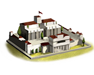 | core building | Governor's Palace | 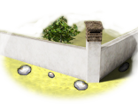 | defenses | Small Stone Wall | 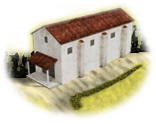 | food storage | Grain Silos (Food trade) |
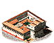 | governmentD | Homeland | hinterland region | Region Information Scroll | 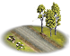 | hinterland roads | Paved Roads | |
| irrigated farming | Basin Irrigation (Crops) | 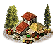 | market | Local Market | military industrial complex | Basic Armoury | ||
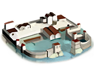 | port buildings | Shipwright | salted fish | Fish Salter (Urban) | 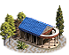 | autonomous mint | Local Mint (Civic) | |
| temples standard | Temple |
What can be recruited here
17 units, as its owner, at the campaign start
| Unit | Raised at | Cost | Upkeep | Unit | Raised at | Cost | Upkeep | Unit | Raised at | Cost | Upkeep | |||
|---|---|---|---|---|---|---|---|---|---|---|---|---|---|---|
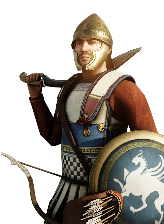 | Bosporan Archers | Homeland | 1,853 | 678 | 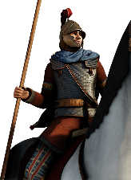 | Bosporan Epilektoi Cavalry | Homeland | 4,550 | 69 | 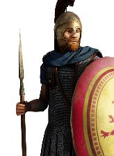 | Bosporan Hoplites | Homeland | 1,654 | 605 |
| Bosporan Machairophoroi | Homeland | 1,928 | 706 | 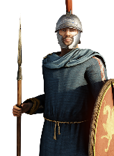 | Bosporan Thureophoroi | Homeland | 1,659 | 607 | Maeotian Archers | Homeland | 1,605 | 587 | ||
| Maeotian Mounted Archers | Homeland | 2,274 | 916 | 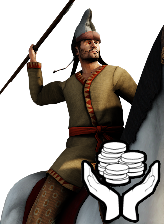 | Mercenary Paphlagonian Skirmisher Cavalry | Homeland | 2,475 | 664 | Scytho-Bosporan Archers | Homeland | 1,574 | 576 | ||
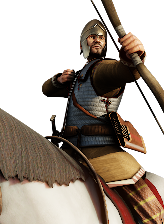 | Scytho-Bosporan Horse Archers | Homeland | 2,544 | 1,024 | 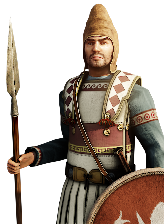 | Scytho-Bosporan Infantry | Homeland | 1,633 | 598 | Sindian Archers | Homeland | 1,386 | 507 | |
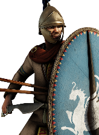 | Sindian Infantry | Homeland | 1,561 | 571 | 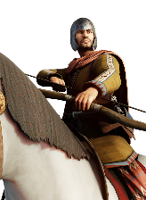 | Sindian Mounted Archers | Homeland | 1,943 | 782 | Taurian Archers | Homeland | 1,297 | 475 | |
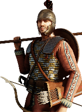 | Taurian Pirates | Homeland | 2,145 | 785 | Taurian Skirmishers | Homeland | 922 | 337 |
Waiting on the Bosporan Military Reform — 2 units
| Unit | Raised at | Cost | Upkeep | Unit | Raised at | Cost | Upkeep | Unit | Raised at | Cost | Upkeep | |||
|---|---|---|---|---|---|---|---|---|---|---|---|---|---|---|
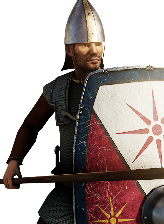 | Bosporan Heavy Spearmen | Homeland | 2,749 | 1,006 | 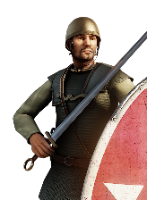 | Bosporan Heavy Swordsmen | Homeland | 2,718 | 995 |
Waiting on the Bosporan Thureos Reform — 1 unit
| Unit | Raised at | Cost | Upkeep | Unit | Raised at | Cost | Upkeep | Unit | Raised at | Cost | Upkeep | |||
|---|---|---|---|---|---|---|---|---|---|---|---|---|---|---|
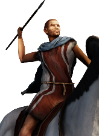 | Thureophoroi Cavalry | Homeland | 1,543 | 621 |
The land around it
Terrain, climate, fertility, water, port, the trade goods placed inside the borders, and the recruitment zones and homeland this ground counts as, are all on Kimmerikos Bosporos — stated there once, so the two pages cannot disagree.